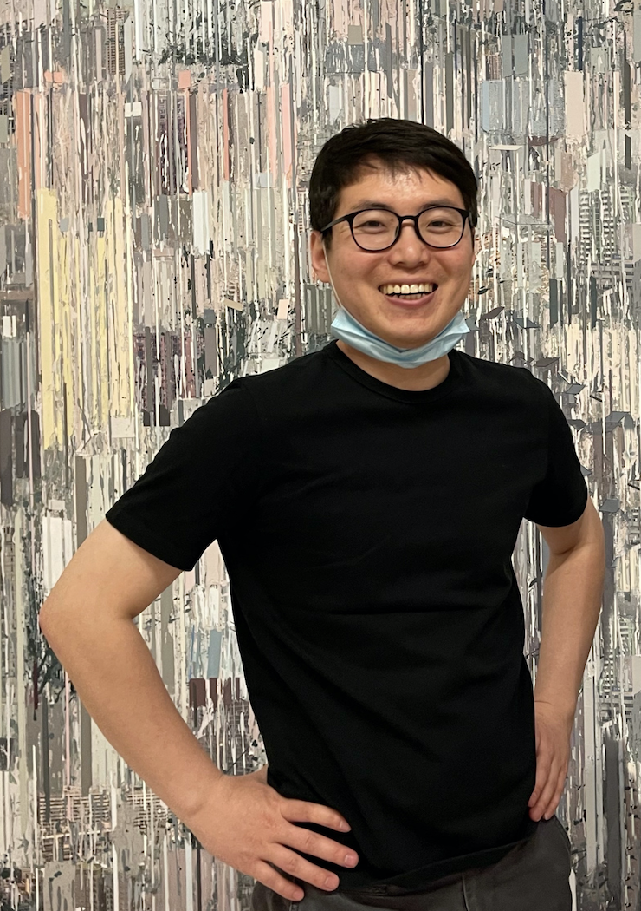

Zhang Jiarui's artistic creation revolves around two intertwined paths: "the contemporary transformation of traditional art" and "the on-site practice of ecological art."
His works represent both a regenerative experiment of traditional aesthetics and a critical intervention in the contemporary ecological context.